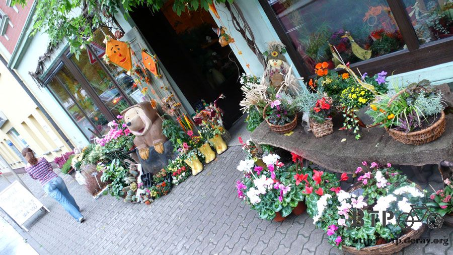
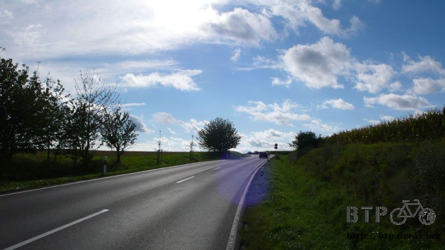
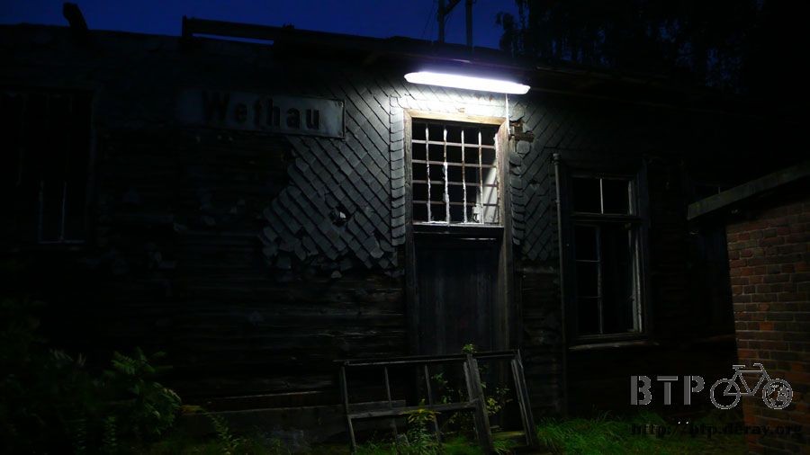

學校沒教的事
夜裡很清楚地聽見疾駛而過的車輛所捲起的水花聲，老天果然決定要下雨了，而且一下就下得很徹底。
在這一間小套房大小的公車站睡了一夜，昨夜不敢再偷懶，將睡墊拿出來鋪底，果然好睡很多，睡醒後肢體不再僵硬。
東西都還沒收拾，先跑到外頭觀察一下雨勢大小，看來才剛開始而已，我還真是趕上了，早不下～晚不下，出發的時候正好開始下。

這場雨不下個一天半天肯定不會停，與其淋得半濕才套上防水袋，不如一早出發就先套起來比較乾脆。
之前都是包包稍微淋濕，覺得有點捨不得才會套上防水袋，今天在包包完全乾燥的情況下就套上防水袋。
本來以為萬無一失，但是水氣依然滲漏了進去，要找一個完美的防水對策真是很困難，這組背包定價已經不便宜了說。
往前沒多遠就進入一個有點規模的城鎮，Leipzig，連它的中文譯名我都沒聽過，只是稍具規模而已，就可以讓我在這邊迷路一個早上。
外加淋雨、逆風、低溫，三者合力作用之下，早上還騎不到二十公里，今天就很想收工找地方睡覺。
城鎮裡處處可見旅館，渾身冰冷濕透的我，毅力一直被這些誘惑動搖著，熱水澡～床鋪～熱食...
歐洲人對於下雨都沒什麼太大的反應，大概因為不常下雨的緣故吧，大多數人就這麼淋雨走在街上，只有很少數的人會撐雨傘。
這次的行李主要分散在五個包包裡，前面三個小的，後面兩個大的，最前面的那一個包包也是唯一一個沒有配置防水袋的。
大雨下個不停，找一個公車站稍微停一下，看著濕透的包包非常不忍心，更擔心裡面的東西是否安然無恙。
拿出最大的塑膠袋將包包給套起來，這樣一來全部的包包都有防水的保護了，除了綁在後座的睡袋、睡墊，還有淋雨騎車的我之外。
淋著雨又吹著冷風，我都不敢看手錶的溫度計顯示現在幾度，好像越看會越冷一樣，一不小心還是讓我瞄到了氣溫只有十二度。
要體會我現在的感受很容易，先將你現在穿的衣服全部拿去洗衣機弄濕然後脫水，趁這個時間去浴室沖一個冷水澡。
接著拿出洗衣機脫水後的衣服，不要曬乾直接穿在身上。
進到房間裡將冷氣開到最強，但是應該沒多少冷氣可以吹到十二度這麼冷吧？
然後再搬出電風扇對著自己吹，大概中量風的程度就可以了。
如果家裡有澆花用的灑水器，就拿著它對自己灑水，沒有也沒關係，每隔十五分鐘就去浴室穿著衣服淋十秒鐘的冷水，然後再進到冷氣房裡吹風。
這樣大概可以體會我現在感受的一半，外加我同時還要騎車、並且處於迷路的狀態、氣溫極低、雨勢不曾停歇、風勢不停地呼嘯著。
不由自主地咳嗽了兩聲，有點擔心會不會把自己給搞掛了，萬一感冒怎麼辦？穿著濕冷冷的衣服，要是變肺炎不是更慘？
偶爾雨勢大得很驚人時，就適時地找屋簷、公車站、騎樓這些地方躲雨片刻。
一停下來，寒意更加強烈，因為身體已經沒有運動，隨意擺動身體，趁機吃巧克力保持熱量。
離開白俄羅斯之前買了很多巧克力，就是這幾天的主要零食，還好當時大手筆採購，現在才有這些東西可以吃，但很快也要吃完了。
躲雨越躲越冷，雨勢稍微變小一點點馬上就冒雨上路，現在是大迷路的狀態，路標派不上用場，指南針又登場了。
當我說拿著指南針在市區找路的時候，我並不是在講笑話，是真的拿著指南針停在十字路口，選擇該往哪一邊走。
別再下雨了，我好冷喔，老天爺行行好，快點放晴吧。
躲雨的地方換了很多，大致上都會找可能有插座的地方，可惜就算找到了，但是卻無法正常供電，躲在室內也不錯，少吹一點風。
看著外面又濕又冷的天氣，現在我正躲在郵局裡，趁機吃掉一包牛奶巧克力，五分鐘後繼續騎車。
明明看起來就不是多大的城鎮，為什麼會在這邊迷路得這麼悽慘呢？
下雨天的郵差，跟法國一樣，德國的郵差也是騎腳踏車，而且都是年輕人，寒冷的天還要冒雨工作，真是辛苦你們了。
迷路得這麼悽慘是因為筆記本中的地名，當時我抄寫了沿路會經過的城市名稱。
寫著寫著就覺得我寫這麼多小鄉小鎮的有用嗎？路標不是都只會標示大城市的地名而已？
所以才寫了五個小地名，我就一口氣跳過一堆小鄉鎮，直接寫幾百公里之外的大城市，這就是問題所在。
德國的路標，標示的都是小鄉小鎮，最遠不會標示超過一百公里遠的城市，前兩天還能夠順利騎車，都是多虧一開始我很認真地寫地名。
結果從Leipzig之後，我寫了一個很遠的地方，所有聯外道路的指示牌，沒有一個指著我要去的方向。
還好城市中都會有這樣的地圖資訊牌子，先定位出自己的所在位置，然後再看該怎麼離開這座城市。
下雨天又愛拿相機出來拍照的結果就是這樣，鏡頭被雨滴給打濕，擦拭的布又放在包包裡，包包又被塑膠袋給包著。

隨便拿一張衛生紙擦一下，結果鏡頭上都是纖維，越擦越髒。
相機收納在外套的口袋裡，身上濕透了當然不能保護相機，拿著一個小的塑膠袋把相機給包起來，今天塑膠袋佔了很大的功勞。
還好平常沒事都會收集這些袋子，想說總有一天可以派上用場。
好冷的天，找地方躲雨一下，越來越有想睡覺的感覺，失溫真的會讓人覺得愛睏。
這次躲在大樓跟大樓之間的通道，可以擋雨，但是通道裡的風勢卻很強勁，身上濕濕的被風吹得渾身發抖。
該趁這個機會換下濕衣服改穿乾的衣服嗎？
那如果連乾的衣服也弄濕了，接下來不就沒有衣服可以換，不如先撐過下雨的區域再說吧。
趁躲雨的時候我去附近的公車站收集了一些別人不要的報紙，有些已經濕濕的，但還是可以用。
收集報紙可不是要拿來看的，學校沒有教你在寒冷的雨天該怎麼保暖，但是電影有教，塞報紙取暖吧。
攤開報紙抖出廣告夾頁，分為兩份，一份塞在身體跟衣服的中間，身體剛接觸到冷冰冰報紙的瞬間，真是很想叫救命。
剩下的一份就塞在衣服跟外套的中間，當作吸收水氣的用途。
塞著報紙感覺有一點暖和起來，是真的有效還是心理因素我也搞不懂，總之沒那麼冷了，繼續迷路吧！
這時候雨勢終於開始轉小，變成微弱的毛毛雨，溫度依然低得令人不敢相信，快要下探到十度以下。
好渴望有暖呼呼的太陽能夠將我全身曬乾，真希望可以把自己跟橫跨戈壁灘的我交換時空，讓我去曬太陽，讓那時的我來吹冷氣。
加油站販賣的微波食物，披薩、漢堡這一類的，買了就可以用旁邊的微波爐加熱來吃，可是都好貴，小小一塊微波披薩要賣到台幣兩百五十元？

結果什麼也沒買就離開這邊，趁機拿了很多紙巾，下雨的時候戴著帽子擋雨，沒兩下子帽子就濕透，連帶頭巾也跟著沾濕。
頭上包覆著冰冷的頭巾，整個頭都冷冰冰的，有一種思考被妨礙的感覺，腦袋因為低溫而逐漸停止運作。
將從加油站拿來的紙巾塞在帽子裡，然後繼續戴在頭上，這樣就可以同時吸乾帽子跟頭巾上的水分，此時如何讓自己保持乾燥是很重要的。
吃不起微波食品，吃麵包總可以了吧，經過這間麵包店的時候，就被撲鼻的香味給攔了下來。
買了一條半的大麵包，售價2.03歐元，剛剛好是一天的預算，真是巧合得不可思議，麵包很便宜的關係，以後可以多吃一些麵包。
買好之後就可以繼續騎車邊騎邊吃，但是我選擇耗在店裡面，因為觀察到這邊有插座可以用，可惜詢問過店員，卻不能讓我使用。
不過麵包店裡有暖氣，暖呼呼的非常舒服，躲在裡面休息，吃掉半條麵包。
便宜的麵包也可以變得很好吃，桌上有很多的奶精跟砂糖，是給喝咖啡的客人調味用的，我拆了幾包砂糖灑在麵包上配著吃。
這樣吃起來，本來平淡無味的麵包就變得很像甜甜圈的味道，半條麵包配四包砂糖剛剛好，隨手又拿了幾包砂糖，之後可以配麵包吃。
臨走前花了一塊歐元買了一杯熱呼呼的咖啡，喝之前用手緊握著杯子的感覺真好，暖意透過杯子直達手心，有點捨不得地喝光熱咖啡。
喝了熱飲，覺得身體有點暖和起來，離開麵包店繼續邁入寒風之中。
濕透的身體當然連鞋子跟襪子也一樣溼答答，無法再繼續穿著騎車，換上通風又透氣的拖鞋繼續上路。
之後看到今天的GPS軌跡，發現自己東繞西繞的真是可悲到一個極限，根本就是在原地打轉呀。
無論如何，總算讓我找到路離開市區，一整個早上都在市區中淋雨兼迷路，進到郊區雨勢就停了。
脫下來的襪子可以跟睡袋綁在一起晾乾，脫下來的鞋子用手拿實在很累贅，又拿出了一個塑膠袋裝起來掛在把手處。

結果眼前可以看到的都是塑膠袋，左邊黑色的裝的是蘋果，已經快要吃完了，剩下七顆，右邊白色的是鞋子，前面則是三個行李包。
郊區的公車站非常幸運地居然有附設廁所，找到裝水的地方，今天的水源補給就全靠它了。
這邊有一棟老舊的教堂，不論何時經過教堂，總是大門深鎖，想去求援也沒辦法。
教堂四周放養著奇怪的動物，居然是孔雀？
雨停了之後，身體慢慢吹著風，一點一點恢復乾燥，這個過程當然是很冷，但是冷到一定的程度之後就麻痺了。
之後又經過了幾個城鎮，規模就沒有早上迷路的Leipzig那麼大，輕鬆穿越，繼續往終點騎。

才下午兩三點而已，已經開始在搜尋適合過夜的地方，因為冷得很想睡覺，只要一想到可以躲在溫暖的睡袋中呼呼大睡，就沒有騎車的動力。
小麥收割完畢之後，下一個等著收成的就是玉米，有一個很老梗的笑話是這樣的
『什麼東西長毛了就代表它成熟了？』
答案是玉米，為什麼會是玉米呢？玉米明明一出生的時候就已經長毛了呀，這些長毛的玉米也通通都還沒有成熟。
所以說答案明明就是小雞雞，幹嘛要硬坳成玉米。
這個路標很機車，標示著一堆都是高速公路，黃色的路標也不標示路名，雖然離開了市區，但在郊區中依然陷入迷路的狀態。
黃色八十七號已經不見了，我的天呀，那我該往何處去？這些地名都是沒聽過的地方呀。
小鄉小鎮的迷路之旅，目前所在是L189號，不論路名還是地名都是沒有計劃會經過的地方。
前面那個阿伯背著一個輪框在騎車，很猛，他從背後超過我，我想問路可是卻追不上他的速度。
路旁種的果樹，如果我知道這些是什麼的話，二話不說就會摘來吃，等蘋果吃完之後，就不知道還有什麼可以吃了。
既然在市區迷路得那麼慘，到了郊區一樣繼續迷路，心一橫就騎上了很明顯是汽車專用道的大馬路。
可憐的是，連騎在這樣的大馬路，我還是找不到自己該去的方向，為什麼德國的路要蓋得那麼複雜呢？
難道不花錢買一份德國地圖就無法騎離開這個國家？
不信邪的我拿出指南針繼續找路走，目標就是西南方，哪邊有路就往哪裡去。
然後就騎到了這邊，我也搞不懂為什麼會從類似高速公路的地方接上這條破破舊舊的小路，但指南針說這邊是正確的方向，所以就走吧。
如果不是身處迷路狀態的話，我會很想欣賞這沿路的美景，只可惜現在沒有這樣的閒情雅致。

希望這個小鎮走出去可以接上大馬路，而不是一望無際的田野，此時此刻我也不知道自己在往何處騎？
盼了好久，總算又出現我可以看得懂的告示牌，也再度標示了道路的編號，又要猜左轉還是右轉了。

猜中的話就繼續往終點騎，猜錯的話，等會兜個圈子不知道會騎到哪邊去，今天已經猜錯很多次了，運氣不是很好。
這次猜左轉，五分鐘後進入加油站，沒有買東西，但是員工還是很好心地讓我借用洗手間，趁機洗把臉。
洗臉的時候發現臉上有刮痕和小血絲，早上騎車的時候被路旁的枝葉給掃過臉頰留下的紀念品，還好不是很嚴重。
加油站除了可以洗臉之外，裡面也張貼著這一區的地圖，剛才選擇左轉是正確的，接下來又可以繼續沿著八十七號走一段路。
身上被風吹乾了之後，報紙保暖的工作就功成身退了，防水袋也卸下來，讓被水氣沾濕的包包也透個風。
全部最濕的東西首推塑膠袋裡的兩隻鞋子，裝在袋子裡固然好攜帶，但是卻不通風，將身上拿出來的報紙塞進鞋子裡吸水氣。
然後把鞋子的鞋帶綁在一起，放在最前面的包包上吹風，希望你們明天可以恢復乾燥。
穿拖鞋騎車雖然很爽，但是兩隻腳好冷好冷呀，冷冰冰的腳丫子已經凍到快要失去知覺了。
雨過天晴，藍天跟太陽再度出現，溫度還是很低，十幾度這樣徘徊著，趁機多曬一點太陽，希望今天這場雨下完，以後就別再下雨了。

下午五點多的時候經過郊區的大賣場，沿著商家走，看見走廊通道的牆壁上有插頭，習慣性地又拿出了充電器試試看能不能用。
試了一整天，今天終於找到可以充電的地方，要好好把握這難得的機會，將需要充電的用品輪流充電。
遊記也在這邊寫完，五點到七點的時光就在購物中心的走廊邊度過，晚餐就啃白麵包配砂糖，天黑之前還得趕路找睡覺的處所。
才七點出頭就變成這樣的景色，為什麼太陽下山的時間那麼早？
過了九月之後，感覺每一天太陽都迫不及待要下山，而日間的溫度也一天比一天還要寒冷。
騎到這邊的時候，心中升起一股膽怯的退縮之意，大自然的景觀實在太偉大了。
騎在這條荒野中的道路，眼前的景色很像在跟我說『平凡的人，你就只能騎到這邊了，不准你再往下走。』
一種莫名的敬意和退縮的感覺同時夾雜著出現，心裡覺得自己好渺小，再往前走會怎麼樣？是世界的盡頭嗎？
不論老天爺你說什麼，這條路我是走定了，逆天也沒辦法。
天色昏暗，街燈亮起，路旁是一間教堂，牽著車走上斜坡，打算如果看到人就鼓起勇氣問能不能留宿我一晚？
結果依然是大門深鎖，其實我也不確定這邊是不是教堂，搞不好只是有錢人的家而已，但我好想在教堂裡睡上一覺。
天色越暗尋找過夜場所的急迫性就越強，眼前是公車站，比昨天那一間小很多很多，看起來則還蠻乾淨舒適的。
心裡莫名的堅持，同樣的地方不連續住兩個晚上，所以捨棄這間公車站，繼續尋找適合過夜的場所。
天色已經快要黑了，就算要挑剔，動作也得快一點，今天晚上下雨的機會也很高，找個有屋頂的地方棲身是必要的。
四處查看了一下，這是其中一個選擇，樹林之中的小木屋，已經荒廢了，但還有路燈照明，入夜之後也不會顯得太恐怖。
這是第二個選擇，像鬼屋一樣的荒廢工廠，裡面很乾淨，但是門是鎖的，窗戶則大開，東西分批搬進去也是可以過夜。

最後我選擇在小木屋中的一個小房間睡上一晚，沒有門，所以夜裡寒冷的風吹進來的時候冷得我渾身發抖，這個時候我還沒躲進睡袋裡。
手錶的溫度計只有六度，很恐怖，萬一今天我沒有帶這些露營的裝備出來那該怎麼辦才好呢？
其實也不怎麼辦，因為外面的鎮上就有餐廳跟旅館，花錢就可以吃上一頓美食跟住舒服的房間。
跟睡袋綁在一起通風的襪子，半天之後只剩下一隻，另外一隻不知道掉到什麼地方去了？
還好這次帶了兩雙襪子出來旅行，剩下的一隻襪子就繼續帶著吧，等我又弄丟一隻襪子的時候還可以湊成一雙繼續穿。
冷冰冰的夜裡，睡袋跟帳篷提供了良好的保暖效果，外面的溫度那樣寒冷，睡袋中還能保持三十度以上的溫暖。
今天這些露營的裝備也都淋了一天的雨，沾上了些微的水氣，趁今天晚上拿出來睡一覺，明天就可以恢復乾燥了。
看著累積的里程表，如果『行百里、半九十』這句話是真的，那今天感到肅然起敬，渾身雞皮疙瘩的那一段路，就是九十%的瞬間。
雨後的天空相信很快也會放晴，剩下十%的路，牽著小多用走的我也要走完，希望別那麼慘就是了，最近烏鴉嘴很靈，說什麼都會成真。
繼續閱讀：9.4 神～請引導我走在正直的路上
歐洲-歐元－ 1：45 台幣
9.3 |
總計：3.03元 |
一條半的麵包2.03元、熱呼呼咖啡1元 |
|